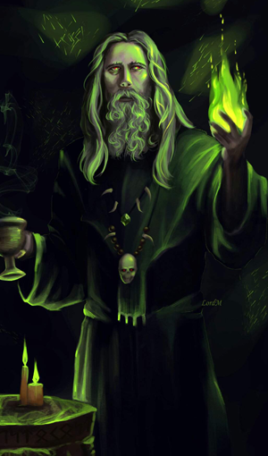
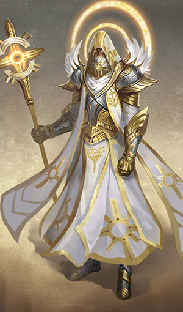

Искатели приключений - необычные существа, движимые жаждой жизненных потрясений, на которые другие никогда бы не осмелились. Это герои, вынужденные исследовать тёмные уголки мира и принимать испытания, которым большинство женщин и мужчин не смогли бы противостоять. Класс является основным мерилом способностей вашего персонажа. Это больше чем профессия, это призвание вашего персонажа. Класс формирует ваше представление о мире и взаимодействие с ним, а также ваше отношение к другим существам и силам мультивселенной. Воин, например, может смотреть на мир прагматично, с точки зрения стратегии и манёвров, и видеть себя всего лишь пешкой в большой игре. Жрец напротив, может видеть себя в качестве усердного служителя разворачивающегося грандиозного плана божества, или назревающего конфликта между различными богами. У воина есть связи в организациях наёмников или войсках, а жрец может знать множество священников, паладинов и последователей, разделяющих его веру.
Навигация по классам:
| Воин | Следопыт | Волшебник | Колдун | Чародей | Плут | Друид | Жрец | Паладин |
| Варвар | Бард | Монах |
Ваш класс даёт вам целый ряд особых умений, таких как мастерство воина во владении оружием и доспехами, и заклинания волшебника. На низких уровнях ваш класс даёт вам только два или три умения, но при получении новых уровней вы получите новые, и ваши существующие умения улучшатся. Описание каждого класса на этой странице включает в себя таблицу с кратким перечнем всех преимуществ, которые вы получаете на каждом уровне, и подробное описание каждого умения. Искатели приключений иногда развиваются сразу в нескольких классах. Плут может поменять жизненный путь и дать присягу паладина. Варвар может обнаружить скрытые магические способности и практиковаться в классе чародей, продолжая совершенствоваться как варвар. Эльфы известны тем, что сочетают военное мастерство с магической подготовкой и развиваются как воины и волшебники одновременно. Опциональные правила такого комбинирования классов называются мультиклассированием. Двенадцать классов, перечисленные в таблице «Классы», встречаются почти во всех мирах D&D и определяют наиболее типичных искателей приключений.
Таблица «Классы»
| Класс | Описание | Кость Хитов | Основная характеристика | Владение спасбросками | Владение доспехами и оружием |
| Бард | Вдохновляющий заклинатель, черпающий мощь в музыке созидания | к8 | Харизма | Ловкость и Харизма | Лёгкие доспехи, простое оружие, длинные мечи, короткие мечи, рапиры, ручные арбалеты |
| Варвар | Свирепый воин, способный впадать в боевую ярость | к12 | Сила | Сила и Телосложение | Лёгкие и средние доспехи, щиты, простое и воинское оружие |
| Воин | Мастер сражения, опытный во владении различным оружием и доспехами | к10 | Сила или Ловкость | Сила и Телосложение | Все доспехи, щиты, простое и воинское оружие |
| Волшебник | Учёный заклинатель, способный манипулировать структурой реальности | к6 | Интеллект | Интеллект и Мудрость | Боевые посохи, дротики, кинжалы, лёгкие арбалеты, пращи |
| Друид | Проповедник Старой Веры, владеющий силами природы — лунным светом и ростом растений, огнём и молнией, и принимающий облик животных | к8 | Мудрость | Интеллект и Мудрость | Лёгкие и средние доспехи (неметаллические), щиты (неметаллические), боевые посохи, булавы, дротики, дубинки, кинжалы, копья, метательные копья, пращи, серпы, скимитары |
| Жрец | Священнослужитель-заступник, владеющий божественной магией и состоящий на службе высших сил | к8 | Мудрость | Мудрость и Харизма | Лёгкие и средние доспехи, щиты, простое оружие |
| Колдун | Обладатель магии, полученной посредством сделки с экстрапланарной сущностью | к8 | Мудрость | Мудрость и Харизма | Лёгкие доспехи, простое оружие |
| Монах | Мастер боевых искусств, использующий мощь тела в поисках физического и духовного совершенства | к8 | Ловкость и Мудрость | Сила и Ловкость | Простое оружие, короткие мечи |
| Паладин | Святой воин, связанный духовным обетом | к10 | Сила и Харизма | Мудрость и Харизма | Все доспехи, щиты, простое и воинское оружие |
| Плут | Мошенник, который использует хитрость и обман, чтобы одолеть препятствия и противников | к8 | Ловкость | Ловкость и Интеллект | Лёгкие доспехи, простое оружие, длинные мечи, короткие мечи, рапиры, ручные арбалеты |
| Следопыт | Воитель, использующий боевое искусство и магию природы для борьбы с угрозами на окраинах цивилизации | к10 | Ловкость и Мудрость | Сила и Ловкость | Лёгкие и средние доспехи, щиты, простое и воинское оружие |
| Чародей | Заклинатель, черпающий магию в себе, получив её в дар или как наследие | к6 | Харизма | Телосложение и Харизма | Боевые посохи, дротики, кинжалы, лёгкие арбалеты, пращи |


|
Женщина, прикрываясь щитом и лязгая доспехами, устремляется в толпу гоблинов. Из-за её спины одетый в клёпанную кожу эльф осыпает Дварф в кольчуге выставил свой щит перед компаньоном, отражая смертельный удар дубины огра. Его напарник, полуэльф в чешуйчатом доспехе, закрутил два своих скимитара в сверкающем вихре и двинулся в обход огра, отыскивая брешь в его защите. Опытный гладиатор сражается на арене и хорошо знает, как использовать свои трезубец и сеть, чтобы опрокинуть противника и обойти его, вызывая ликование публики и получая тактическое преимущество. Меч его противника вспыхивает голубым светом и испускает сверкающую молнию. Все эти герои — воины. Представители, возможно, самого разнообразного класса в мире D&D. Странствующие рыцари, военачальники-завоеватели, королевские чемпионы, элитная пехота, бронированные наёмники и короли разбоя — будучи воинами, все они мастерски владеют оружием, доспехами, и приёмами ведения боя. А ещё они хорошо знакомы со смертью — они несут её сами, и часто смотрят в её холодные глаза.
Разносторонние специалисты
Воины владеют основами всех боевых стилей. Каждый воин может рубить топором, фехтовать рапирой, владеет длинным и двуручным мечом, может стрелять из лука и даже при некоторой сноровке способен поймать противника сетью. Помимо этого, воины хорошо знакомы с использованием щита и любых доспехов. Помимо общих знаний, каждый воин специализируется на определённом стиле боя. Некоторые концентрируются на стрельбе из лука, другие на сражении с оружием в каждой руке, а есть те, кто свои воинские способности усиливает заклинаниями. Сочетание широких общих навыков и углублённой специализации делает воинов непревзойдёнными на поле боя.
Готовые к опасности
Не все члены городской стражи, деревенского ополчения или королевской армии являются воинами. Большинство из них это просто обученные солдаты, обладающие лишь основными воинскими навыками. Солдаты-ветераны, офицеры, обученные телохранители, посвящённые рыцари и похожие персоны, как правило, являются воинами. Некоторые воины чувствуют потребность использовать свою подготовку в качестве искателей чудовищ, и другая опасная работа, обыденная для искателей приключений, является второй натурой воина, и не так сильно отличается от жизни, оставленной в прошлом. Риск здесь, возможно, и выше, но и награда значительно больше — например, воины в городском дозоре вряд ли могут найти меч язык пламени.
Грубо и дико выглядящий
человек в одиночку следует в тенях деревьев за орками, которые, как он знает, планируют напасть на
расположенную рядом ферму. Зажав по короткому мечу
в каждой руке, он становится
стальным вихрем, вырезающим
одного врага за другим.
Увернувшись от конуса морозного воздуха, эльфийка встаёт на ноги и
натягивает тетиву лука, чтобы пустить стрелу
в белого дракона. Невзирая на волну страха, которая исходит от дракона подобно холоду его дыхания, она посылает одну стрелу за другой, чтоб
найти уязвимые места между толстыми чешуйками.
Подняв высоко руку, полуэльф свистит ястребу, кружащему высоко над ним, призывая птицу
к себе. Нашёптывая указания на эльфийском, он
показывает на выслеженного совомед
а и посылает ястреба, чтобы отвлечь существо, пока он готовит свой лук.
Вдали от суеты городов и посёлков, за изгородями, которые защищают самые далёкие фермы от
ужасов дикой природы, среди плотно стоящих деревьев, беспутья лесов и на просторах необъятных
равнин следопыты несут свой бесконечный дозор.
Смертоностные охотники
Бойцы диких земель, следопыты, специализируются на охоте на монстров, таких как неистовствующие звери, чудовищные создания, ужасающие великаны и смертоносные драконы, угрожающих нападением на цивилизованные земли гуманоидов. Они умеют выслеживать добычу подобно хищнику, скрытно передвигаясь через дебри, прячась среди кустов и камней. Тренируясь сражаться, следопыты делают упор боевой подготовки на сражениях с избранными врагами. Благодаря близости с дикой природой, следопыты приобретают способность творить заклинания, взывая к силам природы подобно друидам. Их заклинания, как и боевые навыки, делают акцент на скорость, скрытность и охоту. Таланты и способности следопыта оттачиваются с концентрацией на защите пограничных земель.
Независимые искатели приключений
Хотя следопыт может заработать на жизнь как охотник или проводник, его истинным призванием является защита приграничных земель от разрушительных действий чудовищ и гуманоидных орд, приходящих из диких земель. В некоторых местах следопыты собираются в тайные ордены или объединяют усилия с кругами друидов. Однако, многие следопыты независимы, так как знают, что если нападёт дракон или отряд орков, оно будут первой (и чаще всего последней) линией обороны. Эта яростная независимость делает следопытов пригодными для приключений, так как они привыкли жить вдали от комфорта сухой постели и горячей ванны. Сталкиваясь с воспитанными в городе искателями приключений, которые ноют о тяготах жизни в дикой природе, следопыты реагируют на это с помесью веселья, разочарования и сочувствия. Но они понимают, что другие искатели приключений, привносящие свою лепту в дело борьбы с врагами цивилизации, стоят дополнительных усилий. Изнеженные горожане могут не знать, как прокормить себя или найти пресную воду в дикой природе, но они компенсируют это незнание своими навыками.
Одетая в серебряные одежды, обозначающие её
статус, эльфийка закрывает глаза, приглушает в
своём сознании суматоху боя и начинает свой тихий напев. Движениями рук она сплетает перед
собой заклинание и запускает крошечный шарик
огня во вражеские ряды, где он взрывается потоками пламени, которые охватывают солдат.
Проверив и перепроверив свои наброски, человек рисует затейливый магический круг мелом на
голом каменном полу, затем посыпает железным
порошком все линии и изящные кривые. Когда
круг готов, он начинает монотонно читать длинное
заклинание. Внутри круга появляется проход, из которого тянет запахом серы из потустороннего мира.
Припав к полу на перекрёстке в подземелье,
гном бросает небольшие костяшки с мистическими символами, бормоча над ними слова силы.
Закрыв глаза, чтобы прочитать видения более
чётко, он медленно кивает, затем открывает глаза
и указывает на проход слева от себя.
Волшебники — адепты высшей маги, объединяющиеся по типу своих заклинаний. Опираясь на
тонкие плетения магии, пронизывающей вселенную, волшебники способны создавать заклинания
взрывного огня, искрящихся молний, тонкого обмана и грубого контроля над сознанием. Их магия
вызывает чудовищ с других планов бытия, предсказывает будущее и обращает поверженных врагов в зомби. Их самые могущественные заклинания могут превращать одно вещество в другое,
вызывать метеориты с небес и открывать порталы в другие миры.
Адепты магии
Дикая и загадочная, разнообразная по форме и функциям, магия привлекает учеников, которые стремятся достичь мастерства в её тайнах. Некоторые хотят уподобиться богам, изменять саму реальность. И хотя для сотворения обычного заклинания требуется лишь произношение нескольких странных слов, совершение пары мимолётных жестов, а иногда щепотка или комок экзотических материалов, эти поверхностные проявления не могут показать опыт, достигнутый долгими часами ученичества и бессчётными часами исследований. Волшебники живут и умирают со своими заклинаниями. Всё остальное вторично. Они учат новые заклинания, экспериментируя и становясь опытнее. Они также могут узнать их от других волшебников, из древних томов или свитков, и от древних существ (таких как феи), которые погружены в магию.
Соблазн знаний
Жизнь волшебников редко бывает обыденной. Наиболее близки к простой жизни, вероятно, те из волшебников, которые работают знатоками или лекторами в библиотеке университета, обучая других секретам мультивселенной. Другие волшебники предлагают свои услуги в качестве прорицателей, служат в вооружённых силах, или проводят жизнь в преступлениях и стремлении к власти. Но соблазн знаний и силы зовёт даже самых обделённых смелостью волшебников из безопасности их библиотек и лабораторий в разрушенные руины и потерянные города. Большинство волшебников считает, что их коллеги из древних цивилизаций знали секреты магии, которые были потеряны навек, и открывшие эти секреты смогут владеть силами, недоступными в нынешнем веке.
|  |
Молодой эльф в золотых одеждах, с псевдодраконом, свернувшимся у него на плече, тепло улыбается дворцовому стражу, вплетая магическое очарование в свои сладкие речи, чтобы подчинить
его своей воле.
Когда в руках морщинистой старухи оживает
пламя, она шепчет тайное имя своего демонического покровителя, вливая в заклинание зловещую
магию.
Переведя взгляд с потрёпанного тома на необычное сочетание звёзд над головой, тифлинг с
дикими глазами начинает мистический ритуал, который откроет проход в далёкий мир.
Колдуны — искатели знаний, что скрываются
в ткани мультивселенной. Через договор, заключённый с таинственными существами сверхъестественной силы, колдуны открывают для себя магические эффекты, как едва уловимые, так и впечатляющие воображение. Колдуны подпитывают
свои силы древними знаниями таких существ как
феи, демоны, дьяволы, карги и чужеродные сущности Дальнего Предела.
Клятва и долг
Колдун заключает договор с потусторонней сущностью. Иногда отношения между колдуном и его покровителем похожи на отношения жреца и его божества, но сущности, выступающие в роли покровителей, вовсе не боги. Колдун может возглавить культ, посвящённый принцу демонов, архидьяволу или совершенно чужеродной сущности — созданиям, у которых обычно нет жрецов. Куда чаще их взаимоотношения похожи на отношения мастера и ученика. Знания колдуна и его сила растут по мере оказания услуг покровителю. Магия, которой наделён колдун, может вносить незначительные изменения в его сущность (например, способность видеть в темноте или читать на любом языке), а также дарует возможность пользоваться мощными заклинаниями. В отличие от начитанных волшебников, колдуны могут дополнять магию некоторыми элементами рукопашного боя. Они хорошо себя чувствуют в лёгком доспехе, и знают, как пользоваться простым оружием.
Поиск знаний
Колдунами управляет ненасытная жажда знаний и власти, это вынуждает их заключать договоры и определяет их будущую жизнь. Истории о колдунах, связавших себя с исчадиями, широко известны. Но не все покровители колдунов — демонические сущности. Иногда путешественник находит в дебрях леса красивую башню, встречает её хозяина или хозяйку — фею, и оказывается втянутым в договор, не получив должной информации. А иногда, углубившись в толстые тома книг с запрещёнными знаниями, ученик открывает свой ум — блестящий, но сумасшедший, реальности, находящейся за пределами материального мира в пустоте, в которой таятся чужеродные создания. Как только договор заключён, жажда колдуна к знаниям и власти не может быть утолена обычной учёбой и исследованиями. Никто не заключает договор с могущественным покровителем без намерения использовать полученную силу. Подавляющее большинство колдунов проводит свои дни в погоне за своими собственными целями. Как правило, это разного рода приключения. Кроме того, требования покровителей ведут колдунов навстречу приключениям
Золотые глаза вспыхивают,
человек протягивает вперёд
руку и высвобождает всепоглощающее пламя, что горит в его
жилах. Пока адское пламя бушует
вокруг его врагов, кожистые крылья
раскрываются у него за спиной, и он
взмывает в воздух.
Длинные волосы развеваются от
магического ветра, полуэльф широко
разводит руки в стороны и запрокидывает голову. Моментально подняв его над
землёй, волны магической энергии проходят
сквозь него и выплёскиваются в окружающее
пространство громадной вспышкой молний.
Крадущийся за сталагмитом полурослик
указывает пальцем на троглодита. Огненная
струя устремляется из его пальца к существу. С
усмешкой он прячется обратно за скалу, не подозревая, что дикая магия изменила цвет его кожи
на ярко-синий.
Чародеи являются носителями магии, дарованной им при рождении их экзотической родословной, неким потусторонним влиянием или воздействием неизвестных вселенских сил. Никто не может обучиться чародейству, как, например, выучить язык, так же как никто не может обучить,
как прожить легендарную жизнь. Никто не может
избрать путь чародейства, сила сама выбирает носителя.
Грубая магия
Магия является частью каждого чародея, наполняя тело, разум и дух скрытой силой, которая ждёт, когда её используют. Некоторые чародеи владеют магией, которая проистекает из древней родословной, связанной с магией драконов. Другие же несут в себе сырую, неконтролируемую силу, хаотичный шторм, который может выплеснуться самым неожиданным образом. Проявление сил чародея крайне непредсказуемо. Некоторые драконьи родословные получают ровно одного чародея в каждом поколении, в других же родословных каждый индивид может являться чародеем. В большинстве случаев способность к чародейству возникает случайно. Некоторые чародеи не могут назвать источник своей силы, в то время как другие связывают его со странными событиями в своей жизни. Прикосновение демона, благословление дриады при рождении, или вода из мистического источника — всё это может разжечь искру чародейского дара. Это может быть дар божества магии, воздействие стихийных сил из Внутренних Планов, прикосновение к безумному хаосу Лимбо или понимание внутреннего устройства реальности. Чародеи не используют книги заклинаний, на которые полагаются волшебники, и, в отличие от колдунов, не полагаются на высокого покровителя, даровавшего им заклятья. Научившись использовать и направлять свою собственную врождённую магию, они могут открыть для себя новые ошеломляющие способы высвобождения этой силы.
Необъяснимые силы
Чародеи довольно редко встречаются в мире, и совсем уж необычно встретить чародея, каким-либо образом не вовлечённого в приключения. Люди с магическими силами, текущими по их жилам, вскоре обнаруживают, что данные силы не могут постоянно дремать. Чародейская магия требует использования, и имеет тенденцию вырываться самым непредсказуемым образом, если её игнорировать. Зачастую, у чародеев туманные мотивы, толкающие их на приключения. Некоторые ищут более глубокого пониманиямагических сил, влияющих на них, или разгадок их таинственного происхождения. Другие же надеются найти способ избавления от своего дара, или раскрытия его полного потенциала. Вне зависимости от их целей, чародеи столь же полезны в отряде искателей приключений, как и волшебники. Хотя чародеи и не владеют множеством заклинаний, это с лихвой компенсируется большой гибкостью в использовании тех заклятий, что им известны.
Дав спутникам сигнал ждать, полурослик крадётся
по подземному залу. Он прижимает ухо к двери,
потом вытаскивает набор инструментов и вскрывает замок в мгновение ока. Затем он исчезает в
тени, пока его друг воин идёт вперёд, чтобы пинком открыть дверь.
Человек скрывается в тени переулка, в то
время как его сообщница готовит свою часть засады. Когда их цель — известный работорговец —
проходит по переулку, сообщница издаёт крик, работорговец начинает выяснять, что произошло, и
лезвие убийцы перерезает его горло прежде, чем
он может издать звук.
Подавив смешок, гномиха шевелит пальцами
и с помощью магии снимает ключи с пояса охранника. Через миг ключи в её руке, дверь камеры открыта, она и её спутники могут спокойно совершать побег.
Плуты полагаются на мастерство, скрытность
и уязвимые места врагов, чтобы взять верх в любой ситуации. У них достаточно сноровки для
нахождения решения в любой ситуации, демонстрируя находчивость и гибкость, которые являются краеугольным камнем любой успешной
группы искателей приключений.
Навык и точность
Плуты прилагают больше усилий для освоения различных навыков, а также совершенствуют свои боевые способности, дающие им большой набор приёмов, каким мало какие персонажи могут похвастаться. Многие плуты сосредотачиваются на скрытности и обмане, в то время как другие совершенствуют навыки, помогающие им в подземельях, такие как лазание, поиск и обезвреживание ловушек, и вскрытие замков. Когда дело доходит до боя, плуты отдают предпочтение хитрости, а не грубой силе. Плуту достаточно сделать один точный удар туда, где нападение наиболее повредит цели, а не одолевать врага шквалом атак. Плуты обладают почти сверхъестественной ловкостью для избегания опасностей, а некоторые обучились магическим трюкам в дополнение к своим способностям.
Теневая жизнь
В каждом городе и посёлке есть своя доля плутов. Большинство из них живёт согласно худшим стереотипам класса, зарабатывая на жизнь грабежами, убийствами, срезанием кошельков и мошенничеством. Часто эти негодяи объединяются в гильдии воров или преступные кланы. Многие плуты действуют самостоятельно, но и они иногда берут учеников, помогающих в мошенничестве и грабеже. Некоторые плуты живут честной жизнью слесарей, следователей или крысоловов, работа которых очень опасна из-за обитающих в канализации лютых крыс и веркрыс. Плуты искатели приключений встречаются по обе стороны закона. Часть из них — закоренелые преступники, которые решили искать удачу и клады, а другая часть живёт жизнью искателей приключений, чтобы уйти от закона. Некоторые обрели и усовершенствовали свои навыки с целью проникновения в древние руины и скрытые склепы в поисках сокровищ
Вскидывая вверх сучковатый посох из остролиста,
эльф вызывает буйство небесной стихии и обрушивает разряды молний на орков, посмевших
угрожать его лесу огнём.
Затаившись высоко в кроне дерева, человек в
облике леопарда смотрит из джунглей на чужеродную архитектуру храма Злой Стихии Воздуха и
пристально наблюдает за действиями культистов.
Рубя клинком из чистого пламени, полуэльф
бросается в гущу армии скелетов, чтобы уничтожить кощунственную магию, возвратившую им
извращённое подобие жизни.
Призывая стихии или подражая животным,
друиды воплощают незыблемость, приспособляемость и гнев природы. Они ни в коем случае не
владыки природы — вместо этого друиды ощущают себя частью её неодолимой воли.
Сила природы
Выше чего-либо другого друиды почитают природу. Именно она является источником всех их заклинаний и магических способностей, непсредственно или через природное божество. Многие
предпочитают духовный путь конечного единения
с природой, но есть и те, кто служат богам диких
просторов, животных или стихий. Длящиеся испокон веков обычаи друидов также называют Старой Верой, противопоставляя их поклонению в
храмах и у алтарей.
Заклинания друидов воздействуют через животных и окружающую природу. Это сила клыка и
когтя, солнца и луны, огня и бури. Также друиды
учатся принимать облик животных, и некоторые
настолько углубляются в это умение, что родному
облику предпочитают звериный.
Сохранение равновесий
Для друидов природа представляет собой шаткое равновесие. Воздух, земля, огонь и вода — те четыре стихии, что составляют основу мира — должны уравновешивать друг друга. Если одна из стихий обретёт превосходство, сам мир может прекратить существование, притянутый стихийным измерением и разорванный на элементарные составляющие. Чтобы не допустить этого, друиды противостоят сектам Стихийного Зла и всем, кто стремится наделить любую из стихий превосходящей силой. Также друидов заботит тонкое экологическое равновесие, необходимое флоре и фауне, и готовность цивилизованных поселений жить в гармонии с природой, а не противопоставлять себя ей. Жестокость природы — часть естественного порядка вещей, однако друиды не терпят всё чужеродное, включая аберрации (иллитиды и бехолдеры) и нежить (зомби и вампиры). Иногда друиды совершают вылазки на таких существ, особенно если те приближаются к их территориям. Священная земля и области нетронутой природы нередко охраняются друидом. Впрочем, при достаточной угрозе естественному равновесию или подзащитной земле друид может перейти к активной борьбе с напастью, ступив на путь искателя приключений.
|  |
Воздев руки и глаза к небу и запев молитву, эльф
начинает сиять внутренним светом, который проливается на боевых товарищей и лечит их.
Распевая песнь славы, дварф широко размахивает своим топором, прорубаясь через ряды орков,
выступивших против него, крича хвалу богам с
каждым павшим врагом.
Посылая проклятье на силы нежити, женщина
поднимает свой священный символ, из которого
льётся свет, отбрасывающий зомби, толпящихся
около её спутников.
Жрецы являются посредниками между миром
смертных и далёкими мирами богов. Настолько же
разные, насколько боги, которым они служат, жрецы
воплощают работу своих божеств. В отличие от
обычного проповедника, жрец наделён божественной магией.
Целители и воители
Божественная магия, как следует из названия, является силой богов, источающейся из них в мир. Жрецы являются проводниками этой энергии, проявляющейся в виде чудотворных эффектов. Боги не дают такую власть всем, кто обращается к ним, но только тем, кто избран выполнять высокое призвание. Использующие божественную магию не полагаются на обучение или тренировки. Жрец может разучить шаблонные молитвы и древние ритуалы, но способность читать заклинания зависит от преданности и интуитивного ощущения воли божества. Жрецы сочетают полезную магию исцеления и вдохновения союзников с заклинаниями, которые вредят и препятствуют врагам. Они могут вызвать страх и ужас, наложить проклятье или болезни, отравить, и даже призвать пламя с небес, чтобы уничтожить своих противников. Встретившись с грешниками, которым поможет только удар булавой по голове, жрецы полагаются на свою боевую подготовку, что позволяет им вступить в ближний бой с силами богов на своей стороне.
Божественные посредники
Не каждый послушник или священнослужитель в храме или святилище является жрецом. Некоторые проповедники призваны к простой жизни служащего в храме, выполняя волю своих богов посредством молитвы и жертв, а не с помощью магии и силы оружия. В некоторых городах духовенство занимает политические должности, или рассматривается как трамплин для более высоких должностей, и вообще не общаются с богом. Истинные жрецы — редкость в большинстве иерархий. Если жрец обращается к жизни искателя приключений, то, как правило, из-за того, что его бог требует этого. Преследуя цели богов, часто попадаешь в опасные ситуации вне стен цивилизаций, приходится карать зло и искать святые реликвии в древних гробницах. Многие жрецы также должны защищать последователей своих божеств, что может означать сражение с неистовыми орками, ведение переговоров о мире между воюющими государствами, или закрытие портала, через который в мир может пройти князь демонов. Большинство странствующих жрецов поддерживает некоторую связь с храмами и орденами, разделяющими их веру. Храм может попросить помощи у жреца, а высший священник вправе просто потребовать её.
Закованный в латы, сверкающие на солнце, несмотря на пыль и грязь долгого путешествия, человек складывает свой меч и щит и касается ладонями смертельно раненного мужчины. Божественное сияние исходит из его рук, и раны мужчины
затягиваются, а глаза широко раскрываются в
изумлении.
Дварф пригнулся к земле за камнем. Его чёрный плащ делал его почти невидимым в ночи, и
он смотрел, как шайка орков праздновала недавнюю победу. Он тихо крадётся к ним и шепчет
свою присягу, и двое орков умирают ещё до того,
как понимают, что он здесь был.
Серебряные волосы сверкают в лучах света,
которые, кажется, льются только на торжественно
смеющегося эльфа. Его копьё вспыхивает, подобно
его глазам, когда он снова и снова наносит удары
уродливому великану, до тех пор, пока его свет не
преодолевает отвратительную тьму.
Вне зависимости от происхождения и миссии,
паладинов объединяет их клятва противостоять
силам зла. Принесённая ли перед алтарём бога и
заверенная священником, или же на священной
поляне перед духами природы и феями, или в момент отчаяния и горя смерти, присяга паладина —
могущественный договор. Это источник силы, который превращает набожного воина в благословенного героя.
Источник праведности
Паладин клянётся защищать справедливость и праведность, отстаивать добродетели мира перед вторжениями тьмы, и охотиться на силы зла, где бы они ни скрывались. Разные паладины сосредотачиваются на различных аспектах праведности, но все они связаны клятвой, которая даёт им силы для совершения их священного дела. Многие паладины преданы богам добра, но сила паладина происходит скорее от собственного стремления к справедливости, чем от божества. Паладины тренируются годами, чтобы обучиться навыкам боя, осваивая владение различными видами оружия и доспехов. Тем не менее, их воинские навыки вторичны по сравнению с магической силой, которой они обладают: силой исцелять больных и раненых, карать нечестивцев и нежить, защищать невинных и тех, кто присоединился к ним в борьбе за справедливость.
За мирской жизнью
Жизнь паладина это жизнь искателя приключений. Пока тяжёлые травмы не сделают их инвалидами, паладины проживают жизнь на линии фронта мировой борьбы со злом. В рядах ополчений и армий мира мало представителей класса воин, и ещё меньшее количество простых людей могут претендовать на истинное звание паладина. Услышав зов, эти воины оставляют прежнее ремесло и берут в руки оружие, чтобы бороться со злом. Иногда их клятвы приводят их на службу государям в качестве лидеров элитных групп рыцарей, но даже тогда их верность в первую очередь отдана делу праведности, а не короне или стране. Ставшие искателями приключений паладины относятся к своему делу серьёзно. Поход в древние руины или пыльный склеп может быть обусловлен поиском более высокой цели, чем поход за сокровищами. Зло таится в подземельях и дремучих лесах, и даже самые скромные победы над ним могут удержать мировое равновесие от небытия.
Высокий, закутанный в шкуры дикарь пробирается сквозь метель, сжимая в руке свой топор. Он
со смехом бросается на морозного великана, который посмел убить лося в стаде его народа.
Полуорк рычит на храбреца, осмелившегося посягнуть на его первенство в племени, готовый
свернуть ему шею голыми руками, как он поступил с предыдущими шестью соперниками.
С пеной у рта дварф швыряет свой шлем в
лицо напавшему дроу, и резко разворачивается,
впечатав бронированный локоть в живот второму.
Несмотря на разнообразие, всех варваров объединяет одно — их ярость. Необузданный, неугасимый и бездумный гнев. Не просто эмоция, их
ярость как свирепость загнанного в угол хищника,
как безжалостный удар урагана, как штормовые
валы океана.
Ярость некоторых из них проистекает из общения со свирепыми духами животных. Другие черпают её из злости на полную боли и страдания действительность. Но для каждого варвара ярость —
это источник не только боевого безумия, но и невероятных рефлексов, стойкости, а также непревзойдённой силы.
Первобытные инстинкты
Жители посёлков и городов настолько гордятся своей цивилизованностью, отличающей их от животных, словно отрицание собственной природы подчёркивает их превосходство. Варвары же, напротив, считают цивилизованность проявлением слабости. Связь между их животными инстинктами, первобытной энергетикой и свирепой яростью очень сильна. Варвары чувствуют себя неуютно в окружении стен или в толпе, но раскрываются в родных диких просторах, в тундре, джунглях или степях, где их племена живут и охотятся. Лучше всего варвары проявляют себя посреди хаоса битвы. Они могут впасть в состояние берсерка, утратив контроль над собственной яростью, и получая взамен нечеловеческую силу и стойкость. Варвар может лишь несколько раз воспользоваться резервами собственного гнева, прежде чем ему потребуется отдых, но обычно этих нескольких раз хватает, чтобы справиться с любой угрозой, встреченной на пути.
Жизнь, полная опасностей
Не все члены племён, которых в цивилизованном обществе называют варварами, имеют класс «варвар». Настоящий варвар среди этих людей так же редок, как опытный воин в городе, и он исполняет схожую роль защитника людей и военного лидера. Жизнь в диких местах таит в себе опасность: соперничающие племена, смертельно опасная погода и ужасные чудовища. И варвар бросается в борьбу с этими опасностями, защищая своих людей.Смелость перед лицом опасности делает варвара превосходным кандидатом в искатели приключений. Кочевой образ жизни часто привычен для примитивных племён, и непоседливая жизнь авантюристов не составляет трудности для варвара. Некоторые варвары скучают по сплочённому семейному укладу своих племён, но в конце концов находят замену в узах, связывающих членов отряда.
Напевая, и перебирая пальцами по
старинному монументу, найденному
в заброшенных руинах, полуэльфийка в обветшалом кожаном доспехе перебирает знания, мелькающие в её голове,
вызывая силой магии, заключённой в песне, людей, которые построили этот монумент
и загадочное предание, которое он изображает.
Суровый человеческий воин ритмично ударяет
своим мечом плашмя о доспех, задавая темп своего военного распева, вдохновляя спутников на отвагу и героизм. Магия его песни укрепляет и подбадривает их.
Смеясь, и настраивая свою цитру, девушкагном накладывает тонкую магию на собравшихся
дворян, гарантируя, что слова её спутников будут
хорошо восприняты.
Неважно, кем является бард: учёным, скальдом или проходимцем; он плетёт магию из слов и
музыки, вдохновляя союзников, деморализуя противников, манипулируя сознанием, создавая
иллюзии, и даже исцеляя раны.
Музыка и магия
В мирах D&D слова и музыка это не просто колебания воздуха, тут они содержат в себе силу. И бард является мастером речей, песен, и волшебства, заложенного в них. Барды говорят, что вся мультивселенная была вызвана к существованию и сформирована словами, которые произнесли боги. И отражения этих первородных Слов Творения до сих пор звучат в космосе. Музыка бардов это попытка уловить эти отзвуки и тонко вплести их в свои заклинания. Наиболее сильной чертой бардов является их исключительная разносторонность. Многие барды предпочитают держаться не на передовой в бою, используя свою магию для вдохновения союзников и препятствования противникам на расстоянии. Но барды способны защищать себя и в ближнем бою, при необходимости используя магию для укрепления своих клинков и доспехов. Их заклинания чаще предназначены для очарования и создания иллюзий, а не для создания явных разрушений. Они обладают обширными знаниями во множестве тематик и естественные способности, которые позволяют им делать хорошо практически всё. Барды становятся мастерами в тех талантах, к которым стремятся их умы, оттачивая их до совершенства, от музыкальных выступлений до эзотерических знаний.
Обучение на опыте
Истинные барды не являются обыденной вещью в мире. Не каждый менестрель, поющий в таверне, или шут, скачущий при королевском дворе, является бардом. Чтобы обнаружить скрытую в музыке магию, требуется тяжёлое обучение и некоторая степень природного таланта, чего большинству трубадуров и жонглёров недостаёт. Однако, определить разницу между этими исполнителями может быть трудно. Жизнь барда проходит в странствиях по землям и посвящена сбору знаний, повествованию историй, и существованию за счёт благодарности публики, как и у любого другого артиста. Но глубина знаний, уровень музыкального мастерства и связь с магией ставит бардов на другую ступень от их собратьев. Барды редко селятся надолго в одном месте, и их естественная тяга к странствиям связана с поиском новых сказаний, обучением новым навыкам и открытию новых горизонтов, что делает карьеру искателя приключений для них естественным призванием. Каждое приключение — это возможность чему-то научиться, попрактиковать разные навыки, проникнуть в давно заброшенные гробницы, обнаружить утраченные произведения магии, расшифровать старые фолианты, пройтись по незнакомым местам, или столкнуться с экзотическими существами. Барды любят сопровождать героев, чтобы засвидетельствовать их свершения из первых рук. Бард, который может рассказать впечатляющую историю из личного опыта, зарабатывает известность среди других бардов. Более того, после повествования такого большого количества историй о великих свершениях героев, многие барды принимают их близко к сердцу и хотят принять роль героя сами.
Её кулаки превратились в марево, отражая обрушившийся град стрел. Полуэльфийка перескочила
баррикаду и бросилась в плотные ряды хобгоблинов. Кружась среди них, она раздавала удары во
все стороны, расшвыривая противников, пока не
осталась единственной, стоящей на ногах.
Глубоко вздохнув, покрытый татуировками человек принял боевую стойку. Когда первый из атакующих орков приблизился к нему, он выдохнул, и
поток огня, с рёвом вырвавшись из его рта, поглотил противника.
Двигаясь бесшумно, как сама ночь, одетый во
всё чёрное полурослик вступил в пятно тени под
аркой, и мгновенно появился из другой чернильной тени на балконе, на расстоянии броска камня.
Он медленно высвободил клинок из укутанных
тканью ножен, и сквозь открытое окно взглянул
на деспотичного принца, столь уязвимого во сне.
Вне зависимости от выбранной дисциплины,
всех монахов объединяет одно — возможность
управлять энергией, текущей в их телах. Вне зависимости от того, проявляется ли она выдающимися боевыми способностями, или чуть заметным
усилением защиты и скорости, эта энергия влияет
на всё, что делает монах.
Магия ци
Монахи тщательно изучают магическую энергию, которая в большинстве монастырских традиций именуется ци. Эта энергия является составляющей частью магии, пронизывающей мультивселенную, а точнее, той её частью, которая протекает сквозь тела живущих. Монахи научились управлять энергией, протекающей сквозь их тела, повышая физические способности и нанося атаки, способные препятствовать течению ци в телах противников. Используя эту энергию, монахи наделяют удары своих голых рук и ног неестественной силой и скоростью. С приобретаемым опытом их боевые тренировки и тренировки владением ци дают им всё больше власти над собственными телами и над телами врагов.
Тренировки и аскеза
Маленькие огороженные монастыри разбросаны по мирам D&D. Это крошечные убежища, позволяющие укрыться от потока повседневной жизни, где само время, кажется, замирает. Живущие тут монахи ищут путь к личному совершенству через созерцание и утомительные тренировки. Многие попадают в монастырь детьми, отправленные туда, если родителям не хватало еды прокормить их, если родители умерли, или в знак благодарности за оказанную монахами помощь. Некоторые монахи живут обособленно от окружающих, оградившись от всего способного препятствовать их духовному росту. Другие дали обет изоляции, появляясь лишь в качестве шпионов или убийц, действуя по приказу своих лидеров, благородных покровителей или иных, смертных или божественных сил. Однако большинство монахов не избегают своих соседей и часто посещают ближайшие городки и посёлки, обменивая свои услуги на еду и другие товары. Будучи универсальными воителями, монахи нередко оказываются защитниками соседей от чудовищ или захватчиков. Для монаха становление искателем приключений означает конец упорядоченной жизни в коммуне. Это может быть трудным шагом, и монахи принимают такое решение нелегко. Те же, кто покинул свой монастырь, относятся к этому шагу очень серьёзно, воспринимая свои странствия как испытание своего физического и духовного развития. Как правило, монахи мало заботятся о материальных богатствах, и ими движет желание достичь большего, чем просто убить чудовище и завладеть его сокровищами.